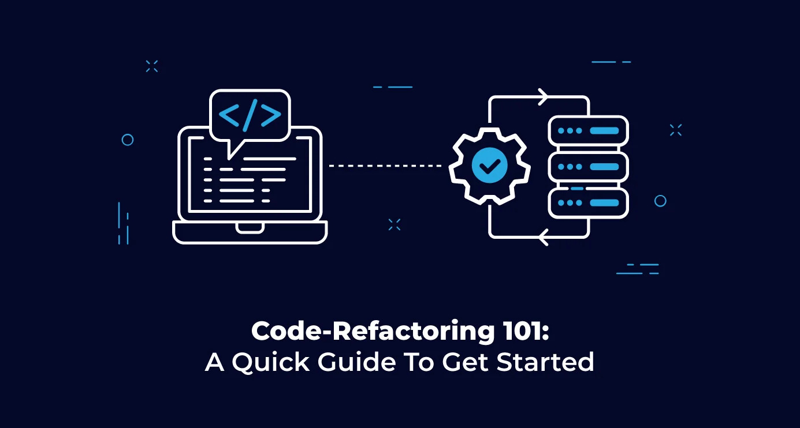

Massive Project Code Refactoring Tips
Since one of my colleagues has so much experience in code refactoring for large projects, he sincerely shared with me how he handled such messy tasks. Although most of the things he had done were just to make steady and continuous efforts like working out in the gym, it makes so much sense to me. In this article, I will share his tips with you.
Organizing Directories
When you try to do code refactoring for a large project, you will hit the wall soon since you have no idea what to do in the beginning, then you will start reading O’Reilly’s tech books or get interested in software development processes or approaches, such as TDD, DDD, etc. If so, your strategy will already end in failure.
You should do something with your hands anyway rather than look for silver bullets. First, why do you not organize the project directories? You can start with a few risks as the action will hardly cause bugs.
Since large project directories are usually cluttered, you will at first find it hard to grasp the class scopes and where the classes are used. Therefore, organizing the directories helps you understand what kind of roles and scopes the classes have in the project before you have to modify them.
Sometimes, it will be tough for you to comprehend what some of the classes work for. In that case, you can create some tentative directories, such as “legacy”, “garbage” or something like that, and put the class files in. If you get to know the meanings of the classes as time goes by, you can move them to the other appropriate directories.
Why should you learn HTML?
Even though you already have to do code refactoring, if you still reckon you do not need any comments for clean codes, it is time to realize your codes are no longer clean and all you have to do is just write a lot of comments even if they look verbose and redundant.
The place where you should leave comments is beside the code where some questions cross your mind while you are reading. If you find the answers, you should write them down as comments before you forget.
You might feel like not leaving comments if the codes are not relevant to the current task you are working. However, think about it. If you do not set yourself free from a kind of self-imposed constraint, you will not be able to take your time only for commenting nor see any signs of the start of it in the future. Mind you, they are just comments.
Next, let us write documents you do not like. Writing documents, which always bores you and sometimes exhausts you, is also essential for code refactoring.
You probably used to be or now you are involved with some projects based on the rule of “code is document”. If you replace a feature with a new one, you will need to read all the codes to understand what the feature does. On the other hand, if you have impeccable documents instead, you can implement the features with your idealistic coding only.
“Something weird. Why do I have to write comments and documents even though the codes will be refactored after all?”
It is wrong. Code refactoring is a long-lasting story. You are not sure when you can start nor if you can start by yourself. A lot of comments and documents exist for yourself and your coworkers in the future.
Coding More
It might sound like a no-brainer, but it is no joke.
To gauge the productivity, what about confirming the number of commits and modified lines? For example, provided that you were not able to meet 100 commits, and 10,000 additions or deletions for the first month, you might need to review your plan.
Anyway, let us focus on coding as much as possible. You do not have to think about architecture, testings, coding rules or something like that beforehand because you can think about such things while you are coding. If you face your coding first of all, you will find the compatible measures for the project.
“You mean, I will have to rewrite everything that I wrote in the beginning, right?”
Yes, you are right. If you make a mistake, just rewrite the codes. No one can complete code refactoring without a failure.
“Having said that, it’s very tough to find time and write codes so much.”
You might have some issues, such as so many office meetings, a lot of the building time of the project, or your own skill. However, nothing happens overnight. Again, you do not have to look for silver bullets, but just make continuous efforts.
Where there is a will, there is a way.